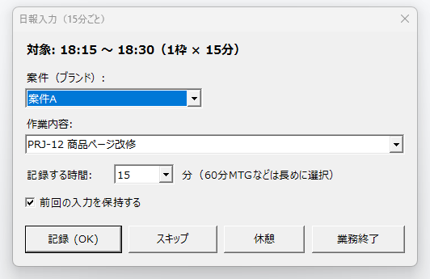
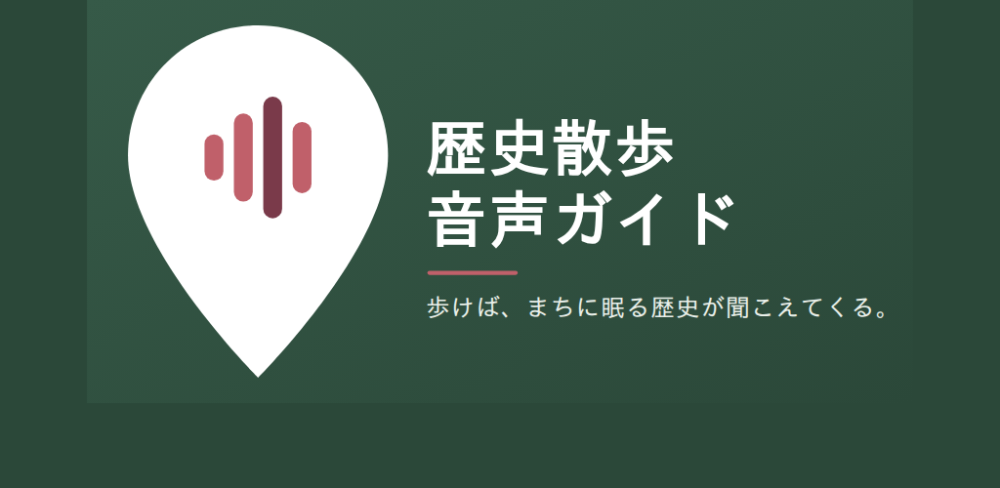

For You
こんなお悩み
ありませんか？
システム化したいが、
何から始めればいいかわからない
目的の整理から要件定義・設計までを一緒に進めます。「何を作るか」が曖昧な段階から伴走します。
ベンダーの言っていることが
理解できず判断に迷う
発注者側の立場で、技術的な内容を翻訳・整理します。ITコンサルティングとして、判断に必要な材料を揃えるところまで引き受けます。
要件定義・設計を
任せられる人材がいない
業務システムの上流工程に対応できる専門家が代行・伴走します。
その課題、上流工程の専門家が一緒に整理します。
About
株式会社ヤエノワ
「どんなビジネスであっても、根っこにあるのは人と人との関係性」。
ご縁と共創を大切に、信頼関係の上に立ち、ともに価値を創っていく会社です。
2025年4月設立。要件定義・設計を軸に活動しています。
代表紹介・会社概要・ビジョンを見る →Capabilities
主な対応領域
これまでの経験をもとに、以下の領域でご支援できます。
曖昧な要望を、実装できる要件へ翻訳します。関係者が多く仕様の固まりにくい上流工程に入り、設計・構築のディレクションまで担います。
「何を作るか」が曖昧な段階から入り込み、関係者の言語を揃えながらプロジェクトを前進させます。 要件定義・ディレクション支援を詳しく見る →基幹システムの刷新・移行と、それに伴うEC連携の切り替えに伴走します。新旧システムの接続と、切替の段取りを設計します。
業務への影響を抑えるための段取りを設計してから、移行に入ります。 システム導入支援を詳しく見る →生成AIの導入検討から、社内で使われる状態にするまで伴走します。どの工程に置けば効くのかを、業務の側から設計します。社内向けの研修にも対応します。
道具を入れることではなく、仕事のどこが変わるのかを先に決めることに時間を使います。 AIコンサルティングを詳しく見る →アプリの受託開発に対応します。企画・要件定義から実装・配布までの工程を、まず自社のプロダクトで通しました（常駐ツールは公開済み、アプリは試験版を配布中）。実装の経験があるのは Windows デスクトップと Android です。
使って、確かめて、直す。その往復で得た手ざわりを、ご依頼先の企画や要件定義にも持ち込みます。 アプリ開発を詳しく見る →Own Product
自社サービス
自社で企画・開発したプロダクトです。日々の業務のために内製して無償公開しているツールと、いま開発を進めているアプリを紹介します。

日報入力ツール
日報を、あとで書かない。
15分ごとに「これからやる作業」を尋ね、CSVに積み上げていくWindows常駐ツールです。終業時には、そのまま集計に使える記録が残ります。ネットワーク通信は行いません。
詳しく見る →
歴史散歩音声ガイド（開発中）
歩けば、まちに眠る歴史が聞こえる。
その場所にゆかりのある歴史上の出来事を、音声で案内するアプリです。開発中で、Android 向けの試験版（β）を配布して検証しています。位置情報は端末内で処理し、外部へ送信しません。
詳しく見る →Strengths
選ばれる理由
正確性を問われる現場で
培った堅牢性
金融・EC領域の業務システムを設計・開発から運用保守まで担うなかで培った、品質基準とリスク管理。要件の抜け漏れを防ぐところに時間を使います。
「何を作るか」を
言語化する整理力
曖昧な要望や現場の課題を、実装できる要件へと翻訳。立場の異なる関係者の言葉を揃え、プロジェクトが迷子にならない土台をつくります。
生成AIを取り入れた
スピードと知見
生成AIを要件定義・設計の実務に取り入れ、検討の速度と質を両立。技術コミュニティでの登壇・発信を通じて、活用の知見をアップデートしています。